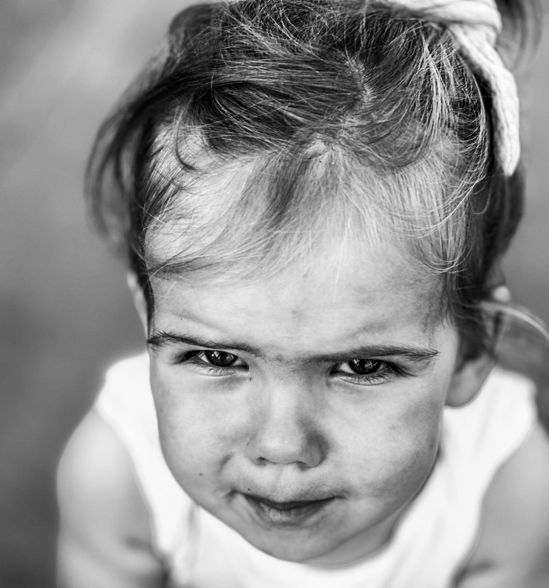
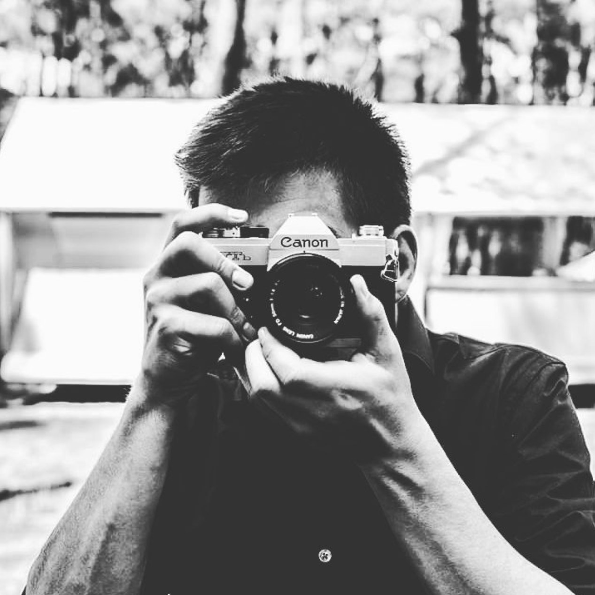

N° 01First WeatherPortrait — 2023
Ruben van Ruysseveldt
Photography —
a personal collection
Statement
Every photograph is a small rebellion against time.
While the world insists on rushing forward, the image stays — a held breath, a moment that refuses to disappear. In that stillness I learn to feel more deliberately, and to see what the speed of living so often hides.
- Frames
- 27
- Collections
- 02
- Since
- 2021
- Based in
- Belgium
Black & white — light, form & stillness

About
A slower, sharper way of looking at the world.
I’m Ruben Van Ruysseveldt, a photographer based in Belgium. This is a personal space — built to share my work with myself and with the people I meet along the way. Nothing commercial; just a love of photography in all its forms.
Lately I’m drawn most to film. There’s something about it that holds an emotion you can’t fake — entirely in the moment. It asks you to step into the scene yourself, and in doing so it changes how you experience life.
- Discipline
- Film photography
- Based in
- Belgium
- Approach
- Personal, non-commercial
- Born
- June 1992
Contact
Say hello.
This isn’t a shop window — just a place to share what I see. If something here resonates, find me on Instagram.
@rubenvanruysseveldt